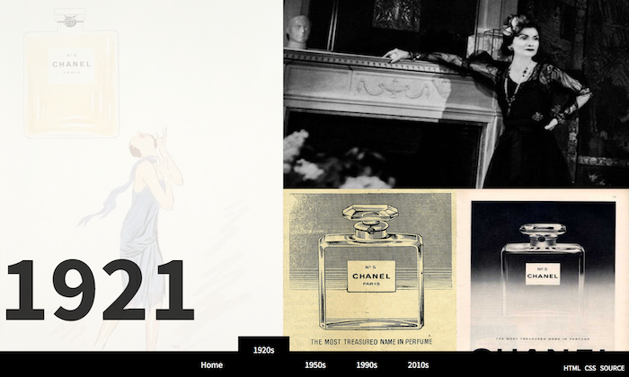

Interactive Design
Feb 14th, 2017

I really enjoy exploring different photo interactive effects.Since I only can use Css and JS, it spends more time to finish the website. But from the asthestic aspect, I really satisfy. But I still want to explore more way to do interaction, not just hover or scale down, maybe aniamation. But due to my poor skills on building website, I think my website, so far, is good design.